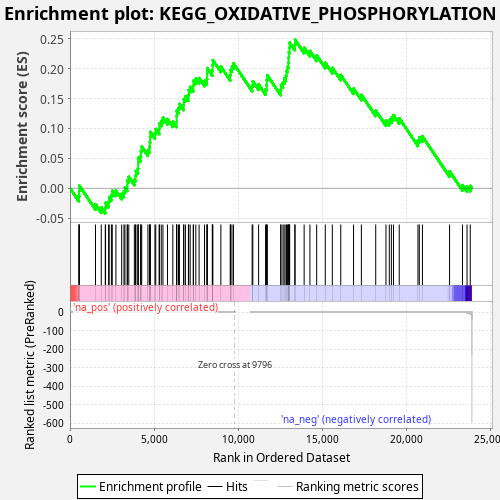
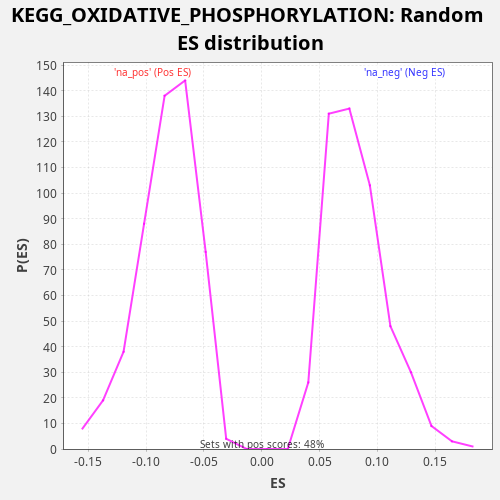

| Dataset | CCLE |
| Phenotype | NoPhenotypeAvailable |
| Upregulated in class | na_pos |
| GeneSet | KEGG_OXIDATIVE_PHOSPHORYLATION |
| Enrichment Score (ES) | 0.24849857 |
| Normalized Enrichment Score (NES) | 3.0327137 |
| Nominal p-value | 0.0 |
| FDR q-value | 0.0 |
| FWER p-Value | 0.0 |

| SYMBOL | RANK IN GENE LIST | RANK METRIC SCORE | RUNNING ES | CORE ENRICHMENT | |
|---|---|---|---|---|---|
| 1 | ATP6V0A4 | 526 | 0.034 | -0.0129 | Yes |
| 2 | NDUFA3 | 547 | 0.031 | -0.0046 | Yes |
| 3 | NDUFC2 | 556 | 0.029 | 0.0042 | Yes |
| 4 | SDHA | 1514 | 0.003 | -0.0269 | Yes |
| 5 | ATP6V0C | 1858 | 0.002 | -0.0321 | Yes |
| 6 | ATP6V1H | 2097 | 0.001 | -0.0329 | Yes |
| 7 | UQCR11 | 2112 | 0.001 | -0.0244 | Yes |
| 8 | NDUFB3 | 2298 | 0.001 | -0.0230 | Yes |
| 9 | ATP6V1A | 2326 | 0.001 | -0.0149 | Yes |
| 10 | COX10 | 2460 | 0.001 | -0.0113 | Yes |
| 11 | ATP6V1D | 2511 | 0.001 | -0.0043 | Yes |
| 12 | ATP6V1F | 2728 | 0.001 | -0.0042 | Yes |
| 13 | NDUFS3 | 3071 | 0.000 | -0.0094 | Yes |
| 14 | NDUFS6 | 3207 | 0.000 | -0.0059 | Yes |
| 15 | ATP6V0D1 | 3264 | 0.000 | 0.0009 | Yes |
| 16 | NDUFB2 | 3403 | 0.000 | 0.0043 | Yes |
| 17 | COX7A2L | 3405 | 0.000 | 0.0134 | Yes |
| 18 | NDUFV3 | 3493 | 0.000 | 0.0189 | Yes |
| 19 | COX7C | 3823 | 0.000 | 0.0143 | Yes |
| 20 | COX6A1 | 3892 | 0.000 | 0.0206 | Yes |
| 21 | TCIRG1 | 3916 | 0.000 | 0.0288 | Yes |
| 22 | NDUFV2 | 4036 | 0.000 | 0.0330 | Yes |
| 23 | NDUFA2 | 4051 | 0.000 | 0.0416 | Yes |
| 24 | COX8A | 4052 | 0.000 | 0.0507 | Yes |
| 25 | COX6B1 | 4198 | 0.000 | 0.0538 | Yes |
| 26 | ATP6V0E1 | 4214 | 0.000 | 0.0623 | Yes |
| 27 | UQCRQ | 4261 | 0.000 | 0.0696 | Yes |
| 28 | UQCRB | 4630 | 0.000 | 0.0633 | Yes |
| 29 | NDUFS7 | 4724 | 0.000 | 0.0685 | Yes |
| 30 | NDUFA6 | 4745 | 0.000 | 0.0769 | Yes |
| 31 | ATP6AP1 | 4763 | 0.000 | 0.0853 | Yes |
| 32 | ATP6V1B1 | 4770 | 0.000 | 0.0943 | Yes |
| 33 | NDUFB4 | 5047 | 0.000 | 0.0918 | Yes |
| 34 | ATP6V1G1 | 5095 | 0.000 | 0.0990 | Yes |
| 35 | SDHB | 5300 | 0.000 | 0.0996 | Yes |
| 36 | NDUFA1 | 5312 | 0.000 | 0.1083 | Yes |
| 37 | NDUFAB1 | 5423 | 0.000 | 0.1129 | Yes |
| 38 | NDUFB1 | 5523 | 0.000 | 0.1179 | Yes |
| 39 | NDUFB8 | 5793 | 0.000 | 0.1157 | Yes |
| 40 | UQCRC1 | 6111 | 0.000 | 0.1116 | Yes |
| 41 | NDUFA10 | 6335 | 0.000 | 0.1114 | Yes |
| 42 | COX7B2 | 6337 | 0.000 | 0.1205 | Yes |
| 43 | NDUFA11 | 6343 | 0.000 | 0.1295 | Yes |
| 44 | NDUFA9 | 6448 | 0.000 | 0.1343 | Yes |
| 45 | COX17 | 6504 | 0.000 | 0.1411 | Yes |
| 46 | NDUFB5 | 6755 | 0.000 | 0.1398 | Yes |
| 47 | MT-ND3 | 6760 | 0.000 | 0.1488 | Yes |
| 48 | SDHC | 6858 | 0.000 | 0.1539 | Yes |
| 49 | UQCRFS1 | 7037 | 0.000 | 0.1556 | Yes |
| 50 | NDUFS1 | 7053 | 0.000 | 0.1641 | Yes |
| 51 | NDUFB10 | 7142 | 0.000 | 0.1696 | Yes |
| 52 | ATP6V0E2 | 7329 | 0.000 | 0.1710 | Yes |
| 53 | PPA2 | 7332 | 0.000 | 0.1800 | Yes |
| 54 | NDUFB7 | 7477 | 0.000 | 0.1832 | Yes |
| 55 | NDUFA7 | 7671 | 0.000 | 0.1842 | Yes |
| 56 | NDUFA8 | 7994 | 0.000 | 0.1799 | Yes |
| 57 | ATP6V0A1 | 8139 | 0.000 | 0.1830 | Yes |
| 58 | UQCRC2 | 8151 | 0.000 | 0.1917 | Yes |
| 59 | COX11 | 8152 | 0.000 | 0.2009 | Yes |
| 60 | ATP6V1E1 | 8455 | 0.000 | 0.1973 | Yes |
| 61 | NDUFA4 | 8470 | 0.000 | 0.2059 | Yes |
| 62 | CYC1 | 8489 | 0.000 | 0.2143 | Yes |
| 63 | SDHD | 8965 | 0.000 | 0.2035 | Yes |
| 64 | NDUFB9 | 9524 | 0.000 | 0.1892 | Yes |
| 65 | NDUFS8 | 9535 | 0.000 | 0.1980 | Yes |
| 66 | ATP6V0A2 | 9624 | 0.000 | 0.2035 | Yes |
| 67 | UQCR10 | 9714 | 0.000 | 0.2089 | Yes |
| 68 | COX5A | 10823 | -0.000 | 0.1715 | Yes |
| 69 | NDUFC1 | 10865 | -0.000 | 0.1789 | Yes |
| 70 | COX5B | 11208 | -0.000 | 0.1737 | Yes |
| 71 | COX7A2 | 11622 | -0.000 | 0.1655 | Yes |
| 72 | NDUFS2 | 11678 | -0.000 | 0.1724 | Yes |
| 73 | COX4I1 | 11695 | -0.000 | 0.1809 | Yes |
| 74 | ATP6V1B2 | 11725 | -0.000 | 0.1888 | Yes |
| 75 | LHPP | 12519 | -0.000 | 0.1646 | Yes |
| 76 | NDUFS4 | 12542 | -0.000 | 0.1729 | Yes |
| 77 | UQCRHL | 12658 | -0.000 | 0.1772 | Yes |
| 78 | MT-CYB | 12728 | -0.000 | 0.1835 | Yes |
| 79 | MT-ATP8 | 12833 | -0.000 | 0.1883 | Yes |
| 80 | COX15 | 12862 | -0.000 | 0.1963 | Yes |
| 81 | ATP6V1C1 | 12922 | -0.000 | 0.2030 | Yes |
| 82 | NDUFA5 | 12977 | -0.000 | 0.2099 | Yes |
| 83 | UQCRH | 12991 | -0.000 | 0.2185 | Yes |
| 84 | NDUFS5 | 13002 | -0.000 | 0.2273 | Yes |
| 85 | PPA1 | 13046 | -0.000 | 0.2346 | Yes |
| 86 | MT-ND2 | 13053 | -0.000 | 0.2436 | Yes |
| 87 | ATP6V1E2 | 13361 | -0.000 | 0.2398 | Yes |
| 88 | NDUFB6 | 13374 | -0.000 | 0.2485 | Yes |
| 89 | COX7B | 13914 | -0.000 | 0.2350 | No |
| 90 | ATP6V0B | 14259 | -0.000 | 0.2297 | No |
| 91 | MT-ATP6 | 14659 | -0.000 | 0.2221 | No |
| 92 | COX6C | 15170 | -0.000 | 0.2098 | No |
| 93 | MT-CO2 | 15588 | -0.000 | 0.2015 | No |
| 94 | MT-CO3 | 16090 | -0.000 | 0.1896 | No |
| 95 | MT-ND1 | 16851 | -0.000 | 0.1668 | No |
| 96 | NDUFV1 | 17315 | -0.000 | 0.1565 | No |
| 97 | MT-ND4L | 18168 | -0.001 | 0.1298 | No |
| 98 | MT-ND6 | 18777 | -0.001 | 0.1134 | No |
| 99 | MT-ND4 | 18975 | -0.001 | 0.1143 | No |
| 100 | MT-ND5 | 19098 | -0.001 | 0.1183 | No |
| 101 | COX7A1 | 19223 | -0.001 | 0.1223 | No |
| 102 | ATP6V1G2 | 19565 | -0.002 | 0.1171 | No |
| 103 | NDUFA4L2 | 20678 | -0.005 | 0.0795 | No |
| 104 | MT-CO1 | 20758 | -0.006 | 0.0854 | No |
| 105 | ATP6V1G3 | 20944 | -0.007 | 0.0868 | No |
| 106 | ATP6V1C2 | 22557 | -0.095 | 0.0282 | No |
| 107 | ATP12A | 23325 | -0.936 | 0.0051 | No |
| 108 | COX6B2 | 23595 | -3.066 | 0.0029 | No |
| 109 | ATP6V0D2 | 23786 | -8.981 | 0.0041 | No |

{kind=link}
{kind=link}